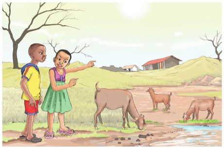

Umuhimu wa Maji

Siku moja dada na kaka walisafiri. Walikwenda kijijini
kumuona babu yao. Babu alikuwa akiishi karibu na
mto. Siku ya safari, waliondoka asubuhi na mapema.
Walitembea kwa miguu mpaka kijijini kwa babu. Walikaa
huko kwa muda wa wiki moja.
Wakiwa kwa babu walifanya kazi ya kuchunga mbuzi.
Baada ya wiki moja maji yalipungua mtoni. Dada
akauliza, kwanini maji yamepungua? Kaka akajibu, ni
kwa sababu ya jua kali. Kama mvua haitanyesha miti
itakauka yote. Angalia miti miwili imeanza kunyauka.
Ahaa! Kumbe miti inakauka ikikosa maji? Sasa nimeelewa,
nashukuru kaka kwa maelezo yako.
Zoezi la pili
Jibu maswali haya kwa kuandika.
1. Taja watu waliomtembelea babu.
Andika jibu kwa mkono katika sehemu hii.
2. Eleza sababu za miti kukauka.
Andika jibu kwa mkono katika sehemu hii.
3. Kaka na dada walifanya kazi gani kwa babu?
Andika jibu kwa mkono katika sehemu hii.
4. Umejifunza nini kutokana na hadithi hiyo?
Andika jibu kwa mkono katika sehemu hii.